Central India Places
- choose
- Amarkantak
- Bhopal
- Gwalior
- Jabalpur
- Omkareshwar
Amarkantak Tourism -- "King of Pilgrimages"
Amarkantak, also known as "Teerthraj" (the king of pilgrimages) is located amidst the exemplary Vindhya and Satpura mountain ranges in Madhya Pradesh
. Amarkantak is situated at an altitude of 1065 meters making it a hill station with some of the most exquisite
temples that one will ever see. One of the holy rivers of India, River Narmada, originates from Amarkantak rendering this place special.
Amarkantak is known for its rich cultural heritage. It is the place where the three mighty rivers- Narmada, Sone and Johila- converge. The dense forests of
Amarkantak have plants rich in medicinal properties, making it signicant from the ecological point of view. It is believed that the mystic poet, Sant Kabir,
meditated here on Kabir Chabutra , which is a platform of Kabir located in
this town.
Thinks To Do
Narmadakund

Trimukhi Temple
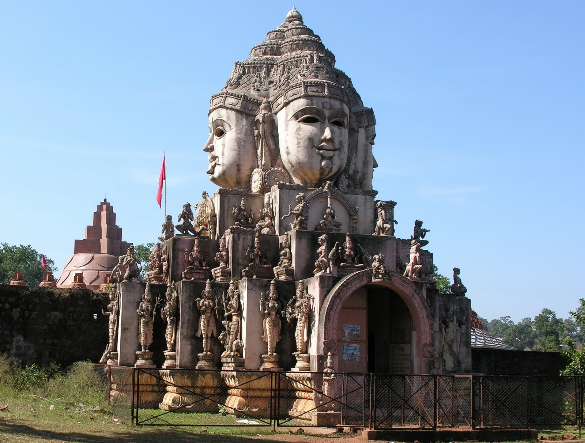
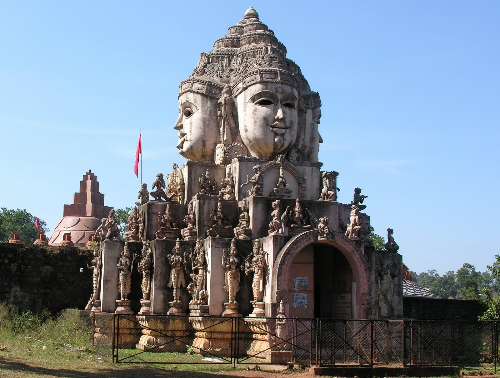
Sonakshi Shaktipeeth Temple

Kapil Dhara

History
Amarkantak?s history has a touch of the holy and spiritual to it. The river Narmada ows through Amarkantak, said to have been blessed by Lord Shiva himself, and devotees strongly believe that a dip in its holy water would absolve them of all sins and provide them with a life blessed with boons. Amarkantak also holds signicance in the religious epic Mahabharat and is believed to be the place where the Pandavas spent a signicant portion of their exile in. Amarkantak was ruled by the king of Nagpur in the 1800s and then later passed into foreign hands. The Exquisite Pilgrimage
Amarkantak stands out in the middle of the great Vindhya and Satpura range. Situated at the height of 1065 mt, it's a beautiful town which is just more than tranquil. It is the main pilgrim hub of central India and also known for the origins of river Narmada, Sone and Johilla. According to the legends, of all the sacred rivers in India, Narmada has a unique signicance. The story says that Lord Shiva blessed the Narmada with unique purifying powers. To purify oneself, the mere sight of the river is enough. Amarkantak also nds a mention in Mahabharat, where Pandavas made one of their homes during their exile.
Amarkantak?s history has a touch of the holy and spiritual to it. The river Narmada ows through Amarkantak, said to have been blessed by Lord Shiva himself, and devotees strongly believe that a dip in its holy water would absolve them of all sins and provide them with a life blessed with boons. Amarkantak also holds signicance in the religious epic Mahabharat and is believed to be the place where the Pandavas spent a signicant portion of their exile in. Amarkantak was ruled by the king of Nagpur in the 1800s and then later passed into foreign hands. The Exquisite Pilgrimage
Amarkantak stands out in the middle of the great Vindhya and Satpura range. Situated at the height of 1065 mt, it's a beautiful town which is just more than tranquil. It is the main pilgrim hub of central India and also known for the origins of river Narmada, Sone and Johilla. According to the legends, of all the sacred rivers in India, Narmada has a unique signicance. The story says that Lord Shiva blessed the Narmada with unique purifying powers. To purify oneself, the mere sight of the river is enough. Amarkantak also nds a mention in Mahabharat, where Pandavas made one of their homes during their exile.
Amarkantak Tourism -- "King of Pilgrimages"
Amarkantak, also known as "Teerthraj" (the king of pilgrimages) is located amidst the exemplary Vindhya and Satpura mountain ranges in Madhya Pradesh
. Amarkantak is situated at an altitude of 1065 meters making it a hill station with some of the most exquisite
temples that one will ever see. One of the holy rivers of India, River Narmada, originates from Amarkantak rendering this place special.
Amarkantak is known for its rich cultural heritage. It is the place where the three mighty rivers- Narmada, Sone and Johila- converge. The dense forests of
Amarkantak have plants rich in medicinal properties, making it signicant from the ecological point of view. It is believed that the mystic poet, Sant Kabir,
meditated here on Kabir Chabutra , which is a platform of Kabir located in
this town.
Thinks To Do
Narmadakund
Trimukhi Temple
Sonakshi Shaktipeeth Temple
Kapil Dhara
History
Amarkantak?s history has a touch of the holy and spiritual to it. The river Narmada ows through Amarkantak, said to have been blessed by Lord Shiva himself, and devotees strongly believe that a dip in its holy water would absolve them of all sins and provide them with a life blessed with boons. Amarkantak also holds signicance in the religious epic Mahabharat and is believed to be the place where the Pandavas spent a signicant portion of their exile in. Amarkantak was ruled by the king of Nagpur in the 1800s and then later passed into foreign hands. The Exquisite Pilgrimage
Amarkantak stands out in the middle of the great Vindhya and Satpura range. Situated at the height of 1065 mt, it's a beautiful town which is just more than tranquil. It is the main pilgrim hub of central India and also known for the origins of river Narmada, Sone and Johilla. According to the legends, of all the sacred rivers in India, Narmada has a unique signicance. The story says that Lord Shiva blessed the Narmada with unique purifying powers. To purify oneself, the mere sight of the river is enough. Amarkantak also nds a mention in Mahabharat, where Pandavas made one of their homes during their exile.
Amarkantak?s history has a touch of the holy and spiritual to it. The river Narmada ows through Amarkantak, said to have been blessed by Lord Shiva himself, and devotees strongly believe that a dip in its holy water would absolve them of all sins and provide them with a life blessed with boons. Amarkantak also holds signicance in the religious epic Mahabharat and is believed to be the place where the Pandavas spent a signicant portion of their exile in. Amarkantak was ruled by the king of Nagpur in the 1800s and then later passed into foreign hands. The Exquisite Pilgrimage
Amarkantak stands out in the middle of the great Vindhya and Satpura range. Situated at the height of 1065 mt, it's a beautiful town which is just more than tranquil. It is the main pilgrim hub of central India and also known for the origins of river Narmada, Sone and Johilla. According to the legends, of all the sacred rivers in India, Narmada has a unique signicance. The story says that Lord Shiva blessed the Narmada with unique purifying powers. To purify oneself, the mere sight of the river is enough. Amarkantak also nds a mention in Mahabharat, where Pandavas made one of their homes during their exile.
Bhopal Tourism -- "City oflakes"
Amidst two beautiful man-made lakes, the capital of Madhya Pradesh is a sprawling city with the right blend of culture, heritage and modern life.
Bhopal is a town which steps into the future with a rich heritage and vibrant history tracing its footsteps. It is highly ornamented with the majestic mosques
which showcase classic Mughal architecture such as the Taj-Ul-Masjid , one of the largest in India, built by the third female ruler Bhopal had, Shah Jahan Begum, Moti Masjid and many more. The city will also catch your attention through its breathtakingly beautiful havelis and museums as well as nawabi food that is an
absolute delight for foodies. Bhopal is also the cultural hub with numerous art performing centres in the city. The city is also a reminiscence of a tragic disaster
in the chemical plant of Union Carbide that took a toll on multiple lives.
Thinks To Do
Upper lake
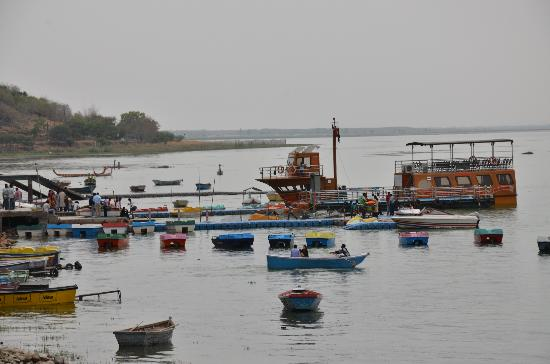
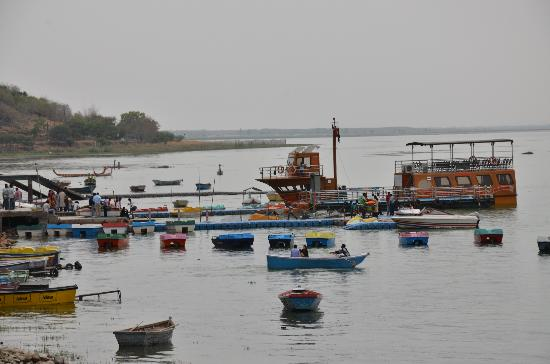
Van Vihar

Gohar Mahal
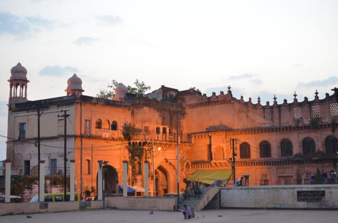
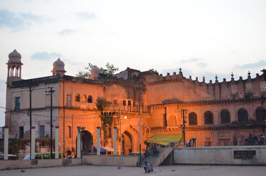
City Shopping
History of Bhopal
Known as Bhojpal in the 11th century, the present-day Bhopal was built by on this land by Parmara King Bhojpal. He was said to have built many lakes that surround the city today. Bhopal is the capital of the state of Madhya Pradesh. This city was improved upon by Dost Mohammed Khan, who established rule upon this city after the death of Emperor Aurangzeb in 1707. Bhopal is known for its culture, arts and architecture which was polished upon during the reign of the Begums. In the 19th century, Bhopal came to be ruled by Muslim women which led the city to great prosperity. Mamola Bai, they rst Begum, looked after the administration of the city after her husband's death. She was then succeeded by Qudsia Begum who took over after her husband was assassinated. Her daughter, Sikander ruled the kingdom after her. During this reign of the Begums, there was peace in the kingdom which gave rise to a mixed culture in Bhopal where people observing dierent religious existed in harmony. Arts, culture, education and architecture ourished which made Bhopal into the beautiful city that it is today.
Bhopal Gas Tragedy
The Bhopal Gas Tragedy is known as the world?s worst industrial disaster. A pesticide plant owned by Union Carbide accidentally exposed 42 tonnes of toxic methyl isocyanate (MIC) gas to almost 500,000 people. People woke up with a burning sensation in their lungs, and some people died instantly after being exposed to the gas. The immediate deaths caused by the gas was 2,259 and more 8000 deaths were reported a week after the incident took place. An additional 8000 people later died due to complications with gas.
Culture of Bhopal
Bhopal is known for its culture and tradition. The city has a mixture of Hindu-Muslim art styles which brings a special feel to the city. Hindi, Urdu and English languages are spoken and understood throughout the place. The food in Bhopal is delicious, not very spicy and hence is liked by many. The Bhopali Gosht Korma is a must try here. The city is also home to Bharat Bhavan, which celebrates and hosts cultural events like tribal dances, folk songs and other programs. When it comes to music, three predominant types be traced here. They are Tribal, Countryside and Bhakti Cult which are adapted from the surrounding areas of Bhopal. This place is a true haven for art, culture and tradition.
Known as Bhojpal in the 11th century, the present-day Bhopal was built by on this land by Parmara King Bhojpal. He was said to have built many lakes that surround the city today. Bhopal is the capital of the state of Madhya Pradesh. This city was improved upon by Dost Mohammed Khan, who established rule upon this city after the death of Emperor Aurangzeb in 1707. Bhopal is known for its culture, arts and architecture which was polished upon during the reign of the Begums. In the 19th century, Bhopal came to be ruled by Muslim women which led the city to great prosperity. Mamola Bai, they rst Begum, looked after the administration of the city after her husband's death. She was then succeeded by Qudsia Begum who took over after her husband was assassinated. Her daughter, Sikander ruled the kingdom after her. During this reign of the Begums, there was peace in the kingdom which gave rise to a mixed culture in Bhopal where people observing dierent religious existed in harmony. Arts, culture, education and architecture ourished which made Bhopal into the beautiful city that it is today.
Bhopal Gas Tragedy
The Bhopal Gas Tragedy is known as the world?s worst industrial disaster. A pesticide plant owned by Union Carbide accidentally exposed 42 tonnes of toxic methyl isocyanate (MIC) gas to almost 500,000 people. People woke up with a burning sensation in their lungs, and some people died instantly after being exposed to the gas. The immediate deaths caused by the gas was 2,259 and more 8000 deaths were reported a week after the incident took place. An additional 8000 people later died due to complications with gas.
Culture of Bhopal
Bhopal is known for its culture and tradition. The city has a mixture of Hindu-Muslim art styles which brings a special feel to the city. Hindi, Urdu and English languages are spoken and understood throughout the place. The food in Bhopal is delicious, not very spicy and hence is liked by many. The Bhopali Gosht Korma is a must try here. The city is also home to Bharat Bhavan, which celebrates and hosts cultural events like tribal dances, folk songs and other programs. When it comes to music, three predominant types be traced here. They are Tribal, Countryside and Bhakti Cult which are adapted from the surrounding areas of Bhopal. This place is a true haven for art, culture and tradition.
Gwalior Tourism -- "Tourism Capital of Madhya Pradesh"
A historic city founded by king Surajesan, Gwalior is galore with beautiful monuments, palaces and temples, giving this city a majestic charm which speaks
volumes of its glorious past.
The city's heritage has remained captured in the imposing architecture of mosques, rock temples and statues. Surrounded by beautiful hills and greenery.
Being a historic city where one of India's most eminent royalty once resided, Gwalior is full of palaces and glorious temples. The Gwalior fort, which gives a panoramic view of the entire city, the Jai Vilas palace and the Sun
Temple are few of the tourist spots in Gwalior that cannot be missed. The great Indian musician Tansen was born in Gwalior and the tomb of Tansen is also an
important place here. Every year, in the month of November/December, a four-day Tansen Music festival is celebrated in the city and it sees various classical
musicians from all over the country performing on the stage near the tomb itself. Gwalior is also the birthplace of former Indian Prime Minister Shri Atal Bihari
Vajpayee, music maestro Amjad Ali Khan and the famous percussionist Alla Rakha.
Thinks To Do
Gwalior Fort
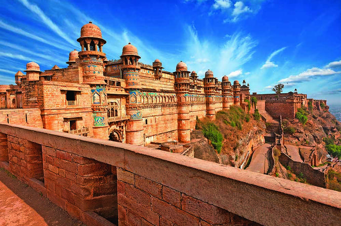
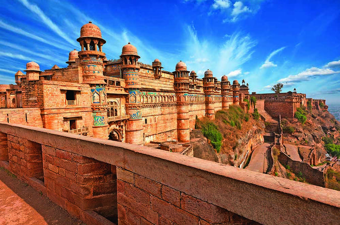
Jai Vilas Palace

Gujari mahal

Man Mandir Palace
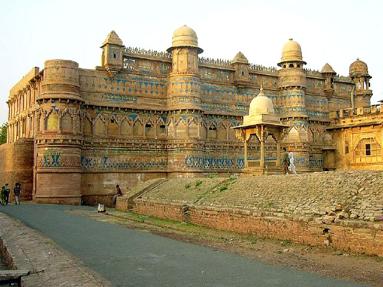
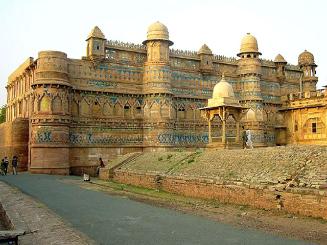
History
Gwalior has a history of being passed on from one dynasty to the other. In as early as 1231, Iltutmish, the third ruler of the Delhi Sultanate captured the Gwalior fort, and it remained under Muslim rule till the 13th century. In 1375, the founder of the Tomar clan, Raja Veer Singh was made the ruler. 1730 saw Gwalior come under the Scindia rule in the 17th and 18th century (Maratha Dynasty) and remained a Princely State during the British rule in the 19th and 20th century. It is also famous for being non-cooperative in the 1857 Battle of Rebellion. The rst occurrence of zero as a written number is recorded in the Chaturbhuj Temple of Gwalior. Hence, Gwalior has the dual historical importance of being ruled by dierent dynasties as well as being a centre of scientic and mathematical signicance.
Tansen Music Festival
The Tansen Samaroh, which started as a local music festival was turned into an event of national importance(between 1952-1962) with the eorts of the then I&B Minister B V Keskar. Held in December every year near the tomb of Tansen at the Behat village of Gwalior, this renowned music festival is a 4-day extravagant tribute to the great musician Tansen. Vocalists, musicians and music lovers gather for this famous festival to celebrate Indian music and musicians.The Tansen Samaroh is held by the Department of the Academy of the Culture, Government of Madhya Pradesh. A very signicant event of this festival is the prestigious National award called ?Tansen Sammaan', bestowed upon the exponents of Hindustani music.
Culture of Gwalior
Gwalior has had a history of bearing rich culture and holds a very important position in the history Indian classical music. It is the birthplace of the oldest genre of Hindustani Sangeet- Gwalior Gharana. The Gwalior Gharana is not only the eldest Khayal Gharana but also one of the most prominent Gharana of Indian classical music to which most musicians can trace their origins. The origin of Ghariyal Gharana began during the reign of the great Mughal Emperor Akabat during 1542- 1605. Legendary maestro Tansen in the court of Akbar was the most prominent patron of this Gharana, belonging to Gwalior. Culturally, Gwalior is the conuence of two culturally rich territories- Braj and Bundeli. Many prominent gures from the eld of poetry, music and arts belong to Gwalior. Three generations of the Akhtar family, Mustar Khairabadi, his son Jan Nisar Akhtar and grandson Javed Akhtar have their origin here. Well known Urdu and Hindi poet Nida Faizal grew up in Gwalior. The great sarod player, Amjad Khan, belongs to Gwalior and his grandfather, Ghulam Ali Khan Bangash became the court musician of Gwalior.
Gwalior has a history of being passed on from one dynasty to the other. In as early as 1231, Iltutmish, the third ruler of the Delhi Sultanate captured the Gwalior fort, and it remained under Muslim rule till the 13th century. In 1375, the founder of the Tomar clan, Raja Veer Singh was made the ruler. 1730 saw Gwalior come under the Scindia rule in the 17th and 18th century (Maratha Dynasty) and remained a Princely State during the British rule in the 19th and 20th century. It is also famous for being non-cooperative in the 1857 Battle of Rebellion. The rst occurrence of zero as a written number is recorded in the Chaturbhuj Temple of Gwalior. Hence, Gwalior has the dual historical importance of being ruled by dierent dynasties as well as being a centre of scientic and mathematical signicance.
Tansen Music Festival
The Tansen Samaroh, which started as a local music festival was turned into an event of national importance(between 1952-1962) with the eorts of the then I&B Minister B V Keskar. Held in December every year near the tomb of Tansen at the Behat village of Gwalior, this renowned music festival is a 4-day extravagant tribute to the great musician Tansen. Vocalists, musicians and music lovers gather for this famous festival to celebrate Indian music and musicians.The Tansen Samaroh is held by the Department of the Academy of the Culture, Government of Madhya Pradesh. A very signicant event of this festival is the prestigious National award called ?Tansen Sammaan', bestowed upon the exponents of Hindustani music.
Culture of Gwalior
Gwalior has had a history of bearing rich culture and holds a very important position in the history Indian classical music. It is the birthplace of the oldest genre of Hindustani Sangeet- Gwalior Gharana. The Gwalior Gharana is not only the eldest Khayal Gharana but also one of the most prominent Gharana of Indian classical music to which most musicians can trace their origins. The origin of Ghariyal Gharana began during the reign of the great Mughal Emperor Akabat during 1542- 1605. Legendary maestro Tansen in the court of Akbar was the most prominent patron of this Gharana, belonging to Gwalior. Culturally, Gwalior is the conuence of two culturally rich territories- Braj and Bundeli. Many prominent gures from the eld of poetry, music and arts belong to Gwalior. Three generations of the Akhtar family, Mustar Khairabadi, his son Jan Nisar Akhtar and grandson Javed Akhtar have their origin here. Well known Urdu and Hindi poet Nida Faizal grew up in Gwalior. The great sarod player, Amjad Khan, belongs to Gwalior and his grandfather, Ghulam Ali Khan Bangash became the court musician of Gwalior.
Jabalpur Tourism -- "The land ofglittering Marble Rocks"
Jabalpur, located on the shores of river Narmada, is an industrial city picking up as a tourist destination because of its splendid ghats, waterfalls and a mild glitter
of historical and cultural structures.
The town of Jabalpur is a fast expanding city with a multitude of options for sightseeing and various places of interest. A 17th-century fort situated near
Narmada river and a temple located near Roopnath are must-visits. Besides them, Bhedaghat-Marble Rocks and Dhuandhar Falls are the most eminent tourist attractions in Jabalpur. Balancing Rock is another site which is must see for tourists here. Jabalpur overall is a
bustling city with modern amenities, lots of working class people and some British architecture along with beautiful natural landscapes. Kanha National Park
and Bandhavgarh National Park are also nearby and Jabalpur can be made a central location to visit these wildlife locations."
Thinks To Do
Dhuandhar Falls

Bhedaghat Marble Rocks

Madan Mahal Fort

Sea World Water Park

History of Jabalpur - A Journey Back in Time
The city of Jabalpur has witnessed several historical events, memoirs in which transports a tourist back in time and is sure to fuel the explorer within. Jabalpur is said to be named after saint Jabali Rishi. In Arabic, the word Jabal means mountains. So there is a possibility that the name of the city is also derived from here. This city was the capital of Tripura Kingdom in the 10th century and was ruled by the Hayahya. Many relics from the reign of King Ashoka were discovered in here. In the 16th century, the city was ruled by the Gonds and then taken over by the Marathas in the 17th century. The British defeated the Marathas in the 19th century and made Jabalpur the headquarter of Nerbudda territories. It also became the capital of Saugor which is the present day Sagar District and Nerbudda District. After Independence, the cantonment in the city was dedicated to army training and a vehicle factory and a gun carriage factory were also established. Once a part of the Gond empire, the history of Jabalpur, inspired by gures like Rani Durgavati is a strong evidence of the strength of Indian women. Jabalpur not only mesmerizes us through the beauty of the Kalachuri art and unique constructions like the Madan Mahal Fort but also reminds of the sacrice of Mahatma Gandhi whose remains were immersed in the Narmada in Tilwara Ghat amidst pure marble on both sides. A great deal of importance was given to make this city a famous tourist destination.
The Marble Empire
Located on the banks of river Narmada, the city of Jabalpur houses several mesmerizing gifts of nature and never fails to amaze a tourist. From the spectacular route of the Narmada, through the shape- shifting marble canyon to the Dhuandhar falls at Bedhaghat, or the Balancing rock which is known to withstand earthquakes of magnitude as high as 6.5, Jabalpur is a reection of the strength and beauty of nature. The amazing creations like the Dumna Nature Reserve Park maintain this industrial city's connection with nature and are certain to ignite imaginations in the busy minds and create a sense of relaxation and rejuvenation.
The city of Jabalpur has witnessed several historical events, memoirs in which transports a tourist back in time and is sure to fuel the explorer within. Jabalpur is said to be named after saint Jabali Rishi. In Arabic, the word Jabal means mountains. So there is a possibility that the name of the city is also derived from here. This city was the capital of Tripura Kingdom in the 10th century and was ruled by the Hayahya. Many relics from the reign of King Ashoka were discovered in here. In the 16th century, the city was ruled by the Gonds and then taken over by the Marathas in the 17th century. The British defeated the Marathas in the 19th century and made Jabalpur the headquarter of Nerbudda territories. It also became the capital of Saugor which is the present day Sagar District and Nerbudda District. After Independence, the cantonment in the city was dedicated to army training and a vehicle factory and a gun carriage factory were also established. Once a part of the Gond empire, the history of Jabalpur, inspired by gures like Rani Durgavati is a strong evidence of the strength of Indian women. Jabalpur not only mesmerizes us through the beauty of the Kalachuri art and unique constructions like the Madan Mahal Fort but also reminds of the sacrice of Mahatma Gandhi whose remains were immersed in the Narmada in Tilwara Ghat amidst pure marble on both sides. A great deal of importance was given to make this city a famous tourist destination.
The Marble Empire
Located on the banks of river Narmada, the city of Jabalpur houses several mesmerizing gifts of nature and never fails to amaze a tourist. From the spectacular route of the Narmada, through the shape- shifting marble canyon to the Dhuandhar falls at Bedhaghat, or the Balancing rock which is known to withstand earthquakes of magnitude as high as 6.5, Jabalpur is a reection of the strength and beauty of nature. The amazing creations like the Dumna Nature Reserve Park maintain this industrial city's connection with nature and are certain to ignite imaginations in the busy minds and create a sense of relaxation and rejuvenation.
Omkareshwar Tourism -- "Mini Varanasi"
Situated at the conuence of the rivers Narmada and Kaveri, the holy city of Omkareshwar is shaped in the form of Hindu religious symbol 'Om', due to the
merging of two valleys and a central pool of Narmada waters. It derives its name from 'Omkara' which is just one other name of Lord Shiva. Situated on the
Mandhata islands, Omkareshwar houses one of the 12 revered Jyotirlingas and hence, draws thousands of devotees each year. It has two ancient shrinesOmkareshwar and Amarkareshwar. The sacred town also boasts of architectural wonders and scenic beauty, in addition to the pilgrim sites.
One of the most sacred towns situated in Madhya Pradesh, Omkareshwar resembles the shape of the Hindu Om symbol. The town of Omkareshwar consists of two ancient shrines- one is Omkareshwar and the other is Amarkareshwar. The holy town is situated
on the meeting point of two rivers- Narmada and Kaveri and is a must-visit for all Lord Shiva devotees and tourists alike. This meeting between two of the most
prominent rivers of India leaves the island in the shape of Hindu symbol Om which is one of the most revered symbols by Hindus. The whole area is bounded
by mountains and it makes for a very beautiful view. A Parikrama around the island is considered to be very religious and the view around the island is also
serene and relaxing.
Thinks To Do
Kedareshwar Temple
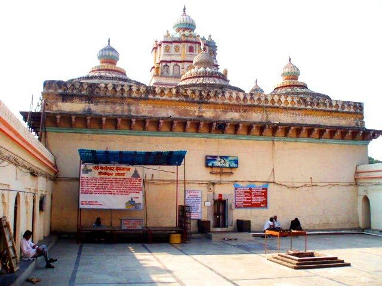
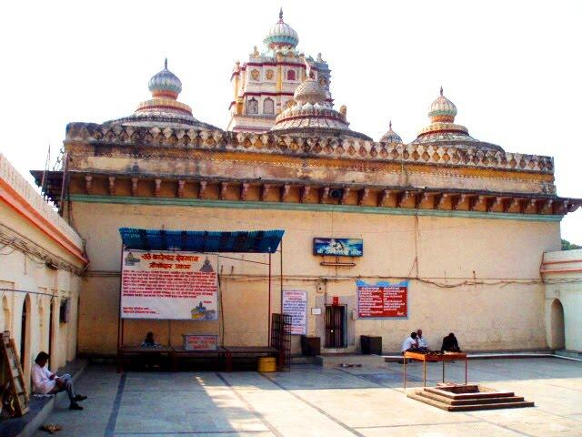
Siddhanath Temple
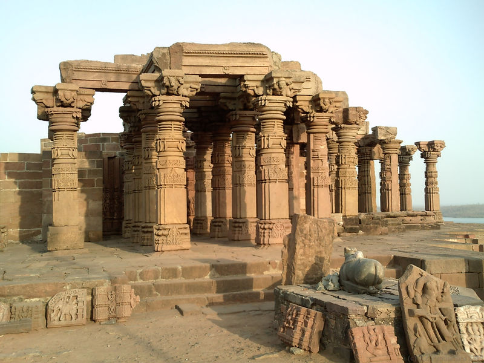
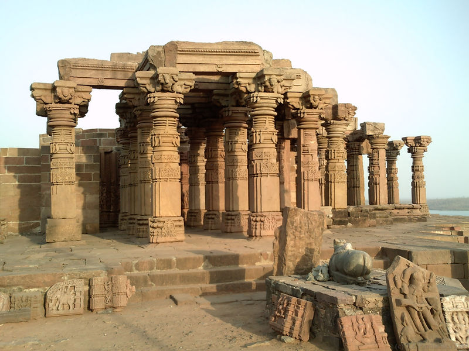
Parikrama on the Island

Sri Govind Bhagavatpaada cave
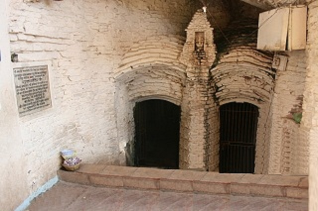
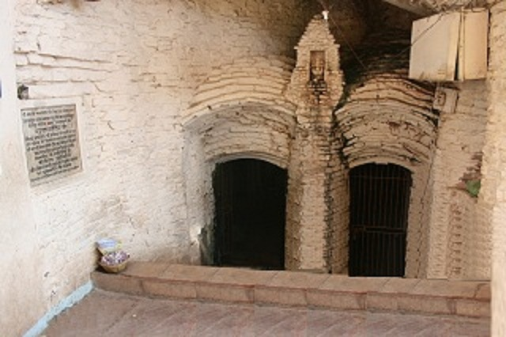
Pilgrimage Site
Omkareshwar is a sacred island on the Narmada river in Madhya Pradesh. It rests at the intersection of the Narmada and the Kaveri rivers, divided north to south by a deep gully. The shape resembles the holiest of all Hindu symbols, 'Om'. It is one of the holiest Hindu sites in India.
Mythology
There are quite a few mythical stories and legends attached to the history and origination of Omkareshwar. The rst one goes to say that Vindhya- the deity controlling the Vindhyachal mountain ranges was worshipping Lord Shiva to cleanse his soul of the sins committed by him. He made a lingam of sand and clay. Impressed by the worship, Lord Shiva appeared before him in two forms- Omkareshwar and Amkareshwar. The second legend suggests that an ancestor of Lord Ram- King Mandhata, worshipped Lord Shiva to the extent that the God appeared and manifested himself in the form of Jyotirlinga. Another Hindu myth says that once during the ancient times, there was a war between the Devas(gods) and Danavs(demons), in which the Devas lost the battle to the Danavs. Disappointed by the failure, the Devas prayed to Lord Shiva, who impressed by their faith and devotion, appeared in the form of Jyotirlinga and defeated the Danavs.
Omkareshwar is a sacred island on the Narmada river in Madhya Pradesh. It rests at the intersection of the Narmada and the Kaveri rivers, divided north to south by a deep gully. The shape resembles the holiest of all Hindu symbols, 'Om'. It is one of the holiest Hindu sites in India.
Mythology
There are quite a few mythical stories and legends attached to the history and origination of Omkareshwar. The rst one goes to say that Vindhya- the deity controlling the Vindhyachal mountain ranges was worshipping Lord Shiva to cleanse his soul of the sins committed by him. He made a lingam of sand and clay. Impressed by the worship, Lord Shiva appeared before him in two forms- Omkareshwar and Amkareshwar. The second legend suggests that an ancestor of Lord Ram- King Mandhata, worshipped Lord Shiva to the extent that the God appeared and manifested himself in the form of Jyotirlinga. Another Hindu myth says that once during the ancient times, there was a war between the Devas(gods) and Danavs(demons), in which the Devas lost the battle to the Danavs. Disappointed by the failure, the Devas prayed to Lord Shiva, who impressed by their faith and devotion, appeared in the form of Jyotirlinga and defeated the Danavs.